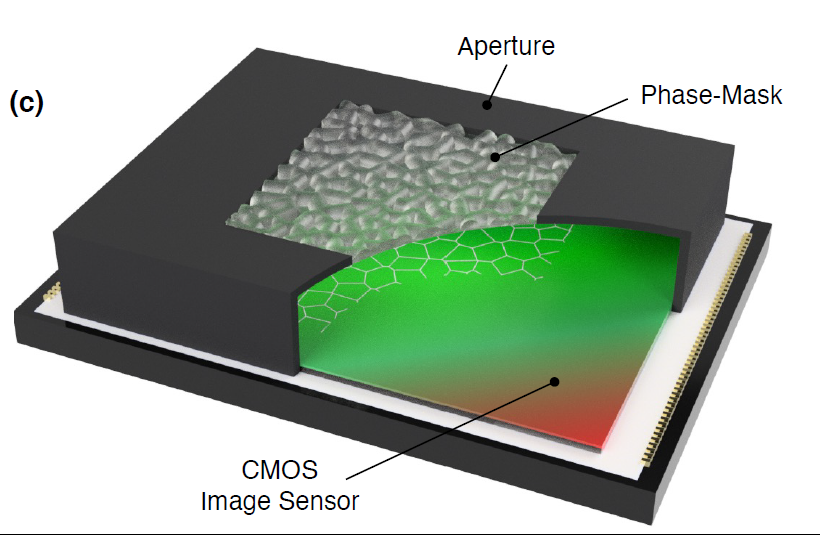
Lensless cameras
IFIN
Official implementation and project page for IFIN (Integrated Forward–Inverse Network for lensless image reconstruction), ECCV 2026.
Bae et al., ECCV 2026
Code, datasets and hardware designs released by the laboratory, and the courses taught by Prof. Seung Ah Lee.
Implementations accompanying published papers.
6 repositories

Lensless cameras
Official implementation and project page for IFIN (Integrated Forward–Inverse Network for lensless image reconstruction), ECCV 2026.
Bae et al., ECCV 2026
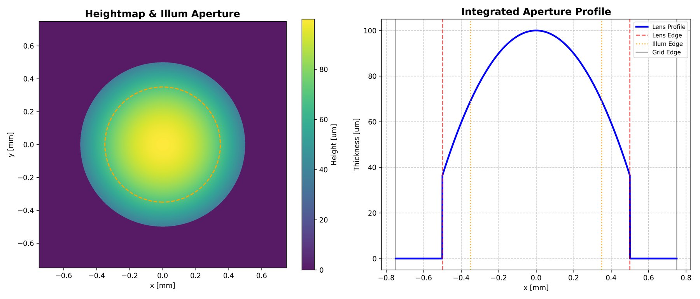
Lensless cameras
Demo code of geometry-aware phase-compensation based angular spectrum method.
Kang et al., Optics Express 2026
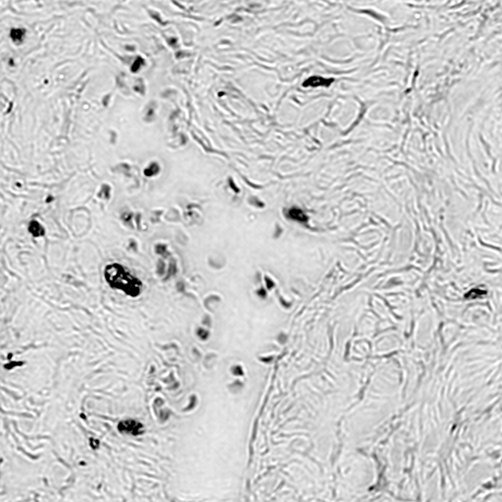
Computational microscopy
Fourier ptychographic virtual staining.
K. C. Lee et al., J. Phys. Photonics 2026
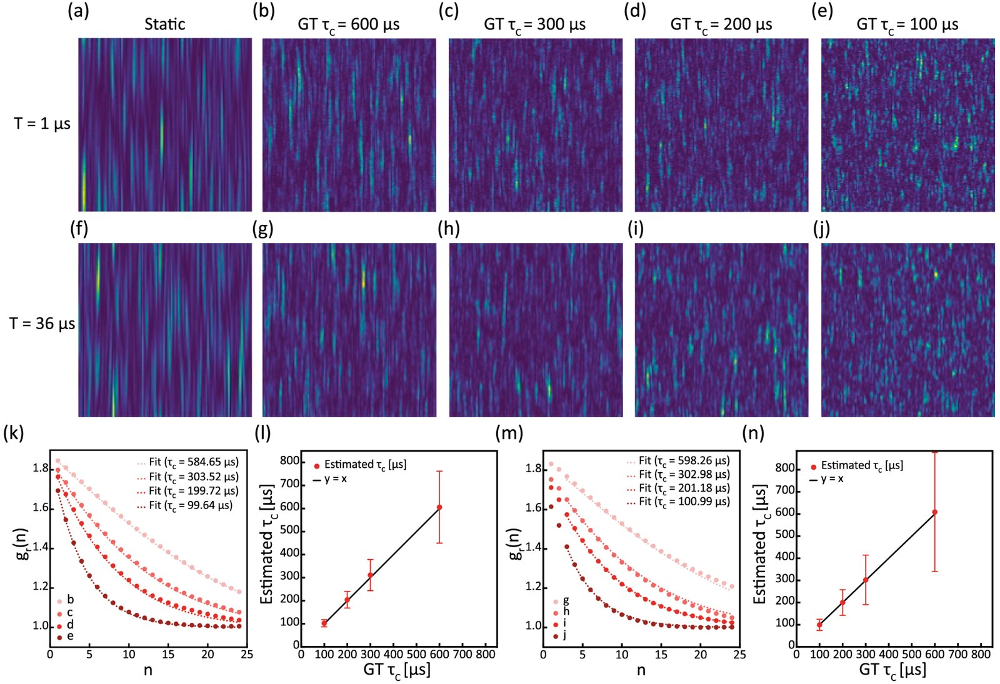
Speckle imaging
Single-shot temporal speckle correlation imaging using rolling shutter image sensors.
Yi et al., Optica 2022
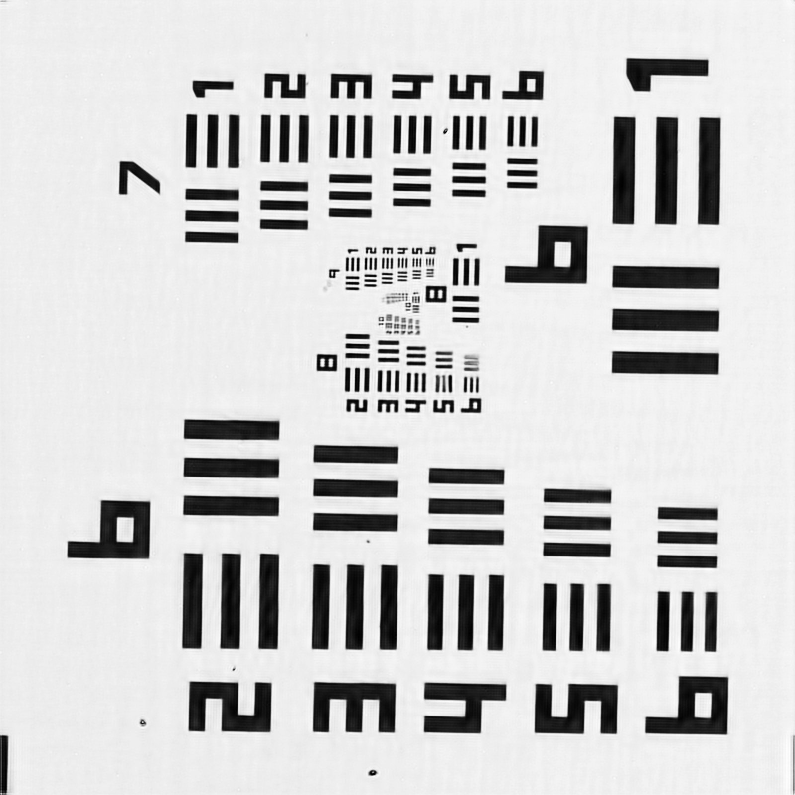
Computational microscopy
Regularized (ADMM) Fourier ptychography reconstruction.
K. C. Lee et al., Optics Express 2024
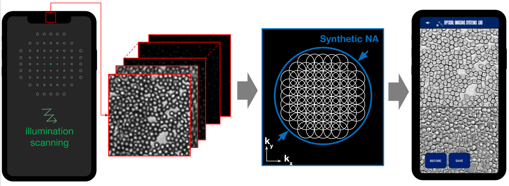
Computational microscopy
A smartphone-based Fourier ptychographic microscope using the display screen for illumination.
K. C. Lee et al., ACS Photonics 2021
5 datasets
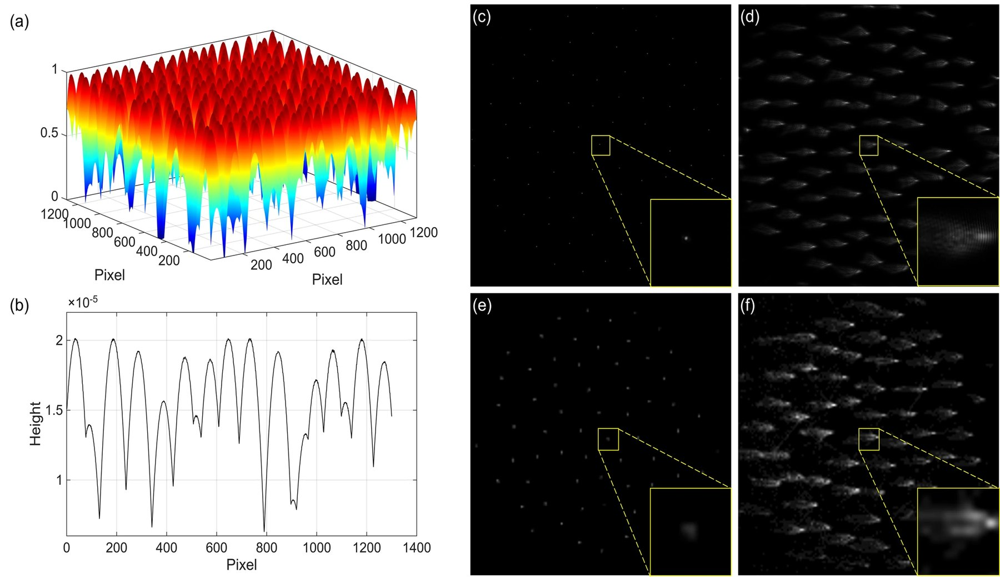
Wide field-of-view lensless camera dataset: 25,000 paired display-capture measurements (24,000 train, 1,000 test) from a compact phase-mask camera (Sony IMX708 sensor) imaging MIRFlickr images shown on an OLED display. Raw captures are 4608 x 2592, resized to 480 x 270 for training. Released with IFIN.
Image: D. Bae et al., ECCV 2026
Open dataset iilab.io/WiderCam
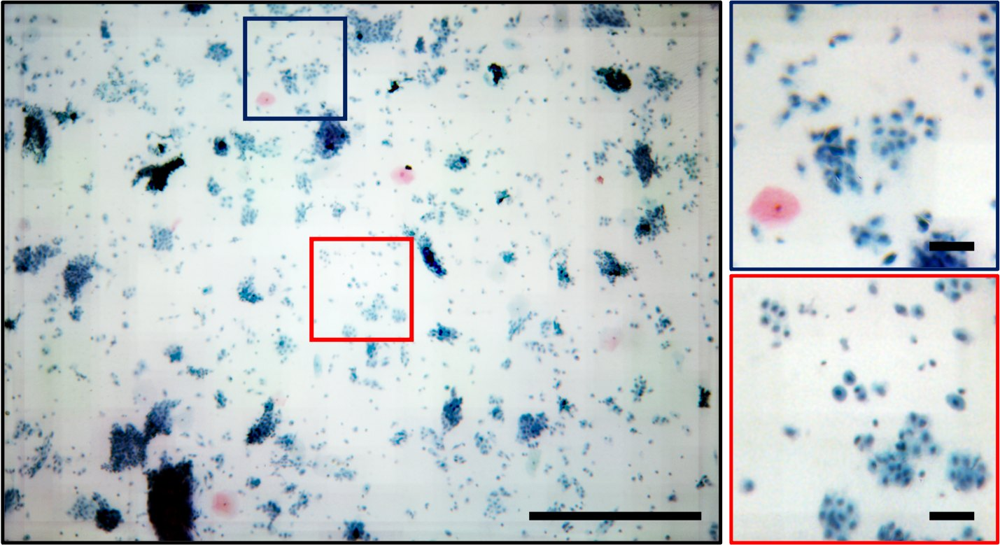
Raw image stacks captured with the smartphone Fourier ptychographic microscope (display-screen illumination) for a blood smear, a phase target and a USAF resolution target, with the Android app (APK) used to acquire them.
Image: K. C. Lee et al., ACS Photonics 2021
Open dataset drive.google.com/drive/folders/1tvjrqGT0v9ROgk3SlGM1GNMT-ugx-2vw
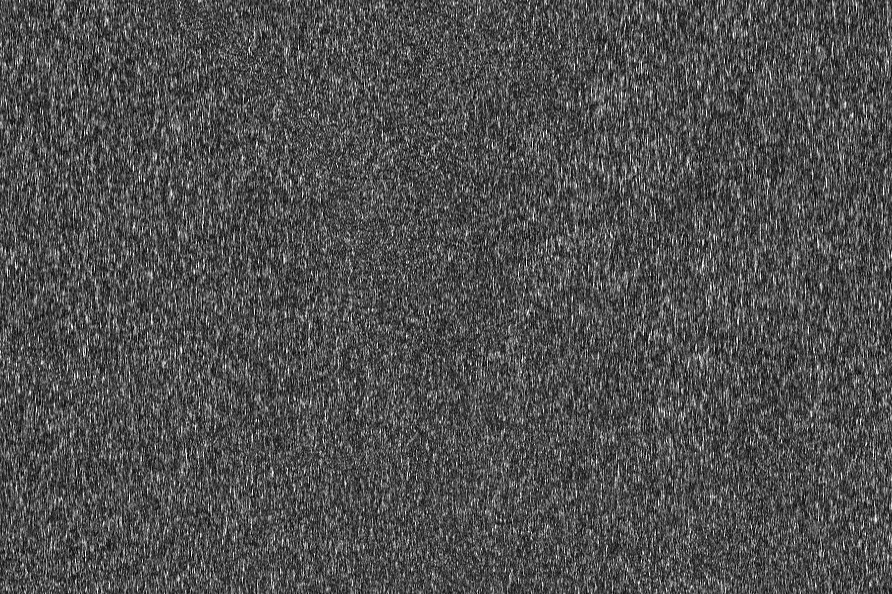
Raw single-shot rolling-shutter speckle images of mouse cerebral blood flow (two imaging sessions) used in the RSSI paper, the data cited in its data availability statement.
Image: C. Yi et al., Optica 2022 (IIL-SNU/RSSI repository)
Open dataset github.com/IIL-SNU/RSSI/tree/main/data
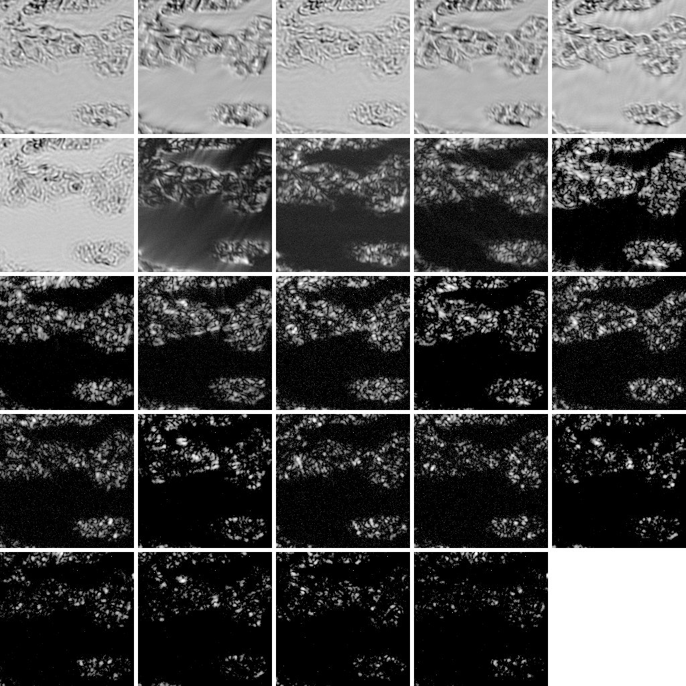
Example full-field-of-view Fourier ptychographic microscopy inputs and reconstructions for the virtual staining code.
Image: IIL, FPVS example data (IIL-SNU/FPVS repository)
Open dataset github.com/IIL-SNU/FPVS/tree/main/data
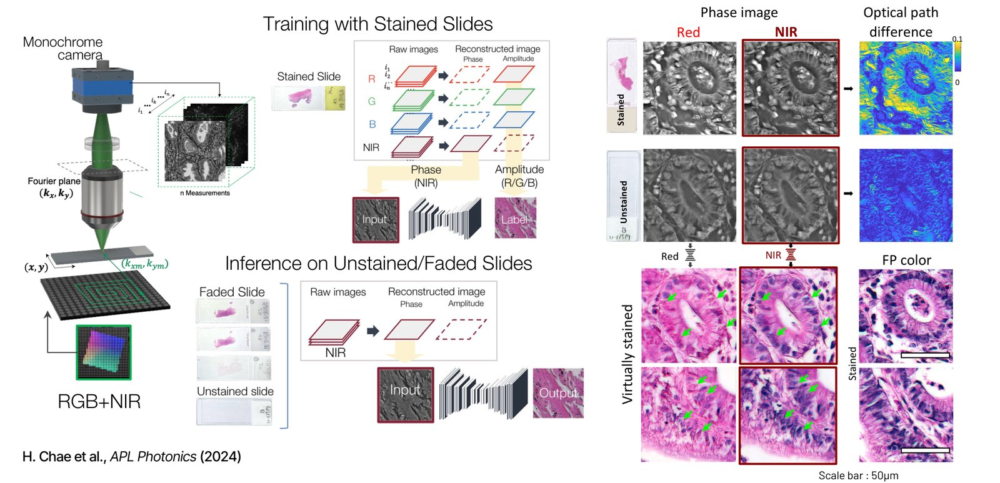
Table of all articles covered in the digital staining review with their categorizations, published as the review's supplementary files.
Image: H. Chae et al., APL Photonics 2024
Open dataset doi.org/10.1186/s43074-023-00113-4
Designs and control code used in the laboratory's optical setups.
GitHub organization
All public repositories of the laboratory, including code, 3D models and device control software.
Courses taught by Prof. Seung Ah Lee at Seoul National University (since 2025) and Yonsei University (2018–2025).
광학 이론 및 설계
Core theories of optics (geometrical, wave and Fourier optics) with both physical and numerical analysis. Students learn to design and analyze imaging systems such as camera optics, and apply these principles to measurement, inspection, automation and vision in mechanical engineering, through lectures, programming/design exercises and a hands-on optical design project.
Fall 2025Spring 2026Fall 2026
계산광학영상기법
An introduction to modern computational optical imaging that bridges optical physics with computation and machine learning. Covers how images are formed and computationally reconstructed across microscopy, lensless imaging, CT and deep-tissue imaging, along with differentiable optics, physics-based AI and optical sensing for autonomous systems, through simulations, Colab exercises and reading of current research.
Fall 2025Fall 2026